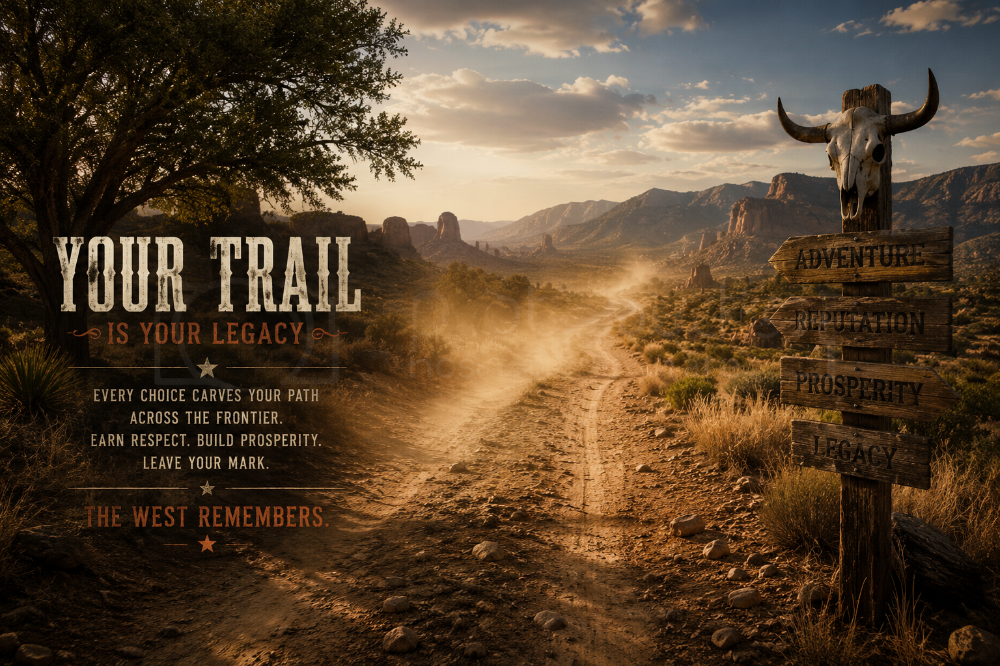

Frequently Asked Questions
A little about the frontier, the project behind it, and where the trail is headed.

What is RDR2PF: Western Dead?
RDR2PF: Western Dead is a private, independently developed project built and maintained primarily by one person. It grows from the enormous foundation provided by Red Dead Redemption 2, RedM and VORP, while reshaping those systems into a frontier designed around survival, exploration, progression and long-term play.
Because that foundation is so large, players may occasionally encounter inherited items or features that do not yet serve a meaningful purpose in Western Dead. Rather than presenting unfinished systems as complete, development has focused on making the parts that matter connect into working gameplay loops.
The frontier has been played and tested across many hours, days, weeks and months. Survival, hunting, travel, professions, gold prospecting, the economy, character progression, encounters and other systems continue to be refined through actual play rather than existing only as ideas on a roadmap.
Why is Western Dead different?
Western Dead is not being designed around the demands of a conventional large public roleplay server. The goal is a living frontier that remains enjoyable and manageable as a private or solo-capable experience, while still allowing additional players to share the world when desired.
That direction allows the world to move at its own pace. Long journeys can matter. Hunting, prospecting and earning a living can matter. Events can interrupt ordinary frontier life, and progression can come from actually spending time in the world rather than simply rushing toward an endgame.
Where is the project headed?
One of the continuing goals is to bring more historically inspired material and real period media into the server wherever it fits naturally. Western Dead is intended to feel less like a collection of disconnected resources and more like a place with its own history, atmosphere and rhythm.
The Compendium follows the same philosophy. It documents systems and information that have actually reached the frontier, while leaving room for unfinished ideas to earn their place later.
The trail continues.
Western Dead will never need to be the largest frontier. It only needs to be one worth living in.
Questions, Issues & Feedback
The RDR2PF: Western Dead Compendium is maintained as part of the continuing Western Dead project, with assistance from OpenAI with research, documentation, organization and editorial work.
For questions, corrections, technical issues, concerns, or other matters regarding the Compendium or Western Dead, please contact the project maintainer: kalv@live.com
Reports and constructive feedback are always welcome and help keep the frontier accurate, useful and continuously improving.